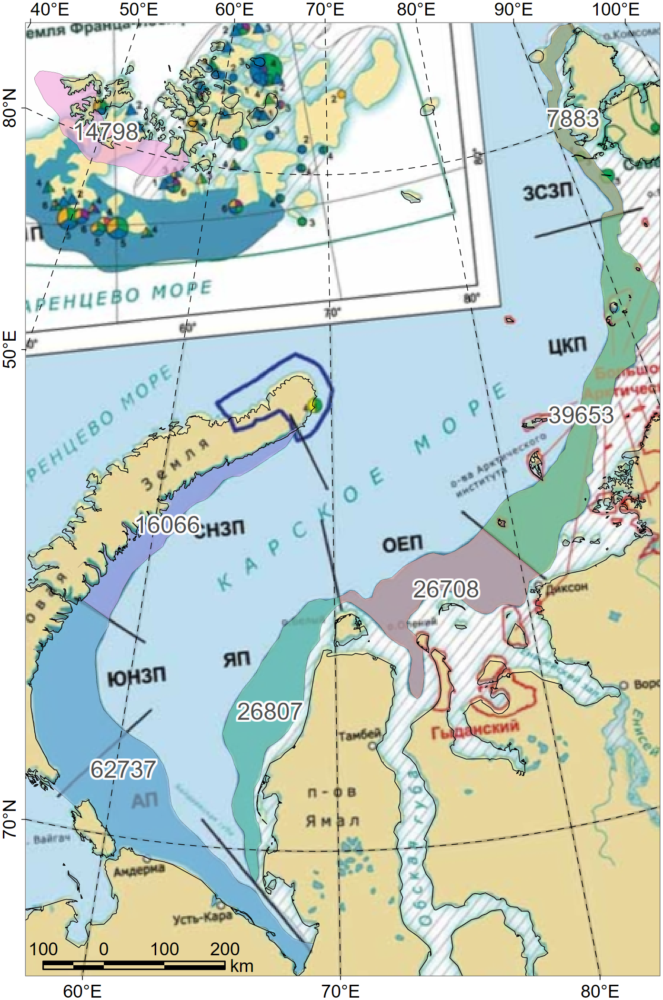

Loading required package: ursaoptions(ursaProj4Legacy=TRUE)
a1 <- ursa_read("atlas_karsk.tif")
a2 <- ursa_read("atlas_franz2k.tif")
ursa_crs(a1)[1] "+proj=laea +lat_0=90 +lon_0=80 +x_0=0 +y_0=0 +datum=WGS84 +units=m +no_defs"[1] "+proj=laea +lat_0=90 +lon_0=80 +x_0=0 +y_0=0 +datum=WGS84 +units=m +no_defs"a1 <- a1[local_sum(a1)>0]
a2 <- a2[local_sum(a2)>0]
# display(a1,graticule.lon=seq(0,350,by=10),graticule.lat=seq(0,80,by=10),col="black")
# display(a2,graticule.lon=seq(0,350,by=10),graticule.lat=seq(0,80,by=10),col="black")
p <- spatial_read("Liman_Sarea.shz")
spatial_crs(p)[1] "+proj=laea +lat_0=90 +lon_0=80 +x_0=0 +y_0=0 +datum=WGS84 +units=m +no_defs"| id | Name | S area |
|---|---|---|
| 3 | ОЕП | 26708 |
| 1 | ЗСЗП | 7883 |
| 2 | ЦКП | 39653 |
| 4 | ЯП | 26807 |
| 6 | ЮНЗП | 62737 |
| 5 | СНЗП | 16066 |
| 7 | ЮЗФИП | 14798 |
p <- ursa:::spatialize(p,resetProj=TRUE)
pc <- spatial_centroid(p)
pc$area <- sprintf("%.0f",pc$'S area')
session_grid(p)
compose_open(height=2000,pointsize=12)
panel_new("layout")
panel_raster(a1)
panel_plot(p["Name"],col=palettize(p[['Name']],pal.bright=191,pal.rotate="circle"),alpha=0.6)
panel_decor(coast.fill="#00000010"
,graticule.lon=seq(0,350,by=10),graticule.lat=seq(0,80,by=10),col="black")
panel_annotation(pc["area"],buffer=1.4)
compose_close()